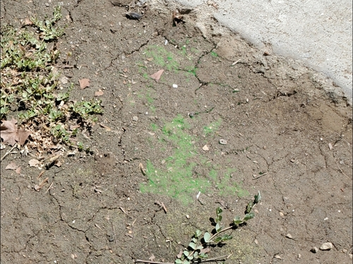

"2019/12/10" Odd Discovery
|
About four and a half years ago, the city was caught in a massive wildfire that caused numerous casualties. Since then, the city has been rebuilt, and no major incidents have happened since then. However, some of the soil where one of the homes once stood had some radioactive residue that even I can't explain. Some of the soil fluoresced with a subtle green glow, which I recognized as uranium thanks to receiving direct sunlight. I went to my car, which had a UV flashlight in the trunk, and sure enough, when I shined it onto the soil, it fluoresced even brighter.  Despite the foliage and moss below it look similar, it continued fluorescing after I casted a shadow onto it, showing it was radioactive, albeit generally harmless. The residents claimed there was no radioactive material found before, nor were there any reports of radiation ever being in the city. Additionally, I could find a trail of the same radiation leading out of the city, which meant this was not naturally occuring and was left there by someone or something. I have to say, this is leaving me stumped! Never have I seen such a phenomenon. If any of my dear readers see anything similar near them, please call me at (248) 434-5508 so I can record the sighting and attempt to locate an origin. |
"2019/11/07" Science show? Not yet.
|
I heard back from them yesterday, saying that the public reception of the infomercial was met with critical acclaim. Everyone loved my energy and enthusiasm, along with those viewers claiming I should make my own content with my high-energy personality. I don't really have an incentive to do this, however. I may return to this idea in the future, but not right now. |
"2019/10/03" I'm Home!!
|
|
"2019/09/09" Returning Home Soon
|
I wish I could stay longer, but sadly I can't. I'll give an update once I return home. |
"2019/08/16" Strange Encounter??
|
Midway through recording, I saw someone looking at me through some foliage and tried chasing them down. I succeeded in getting a photograph of them running away, but couldn't get them on camera. 
In this photograph, you can barely discern a leg running into the foliage. Could this be Blackberry? I'll sadly never know. Despite all of this, the footage I got, while grainy, worked perfectly for their song. At least that's a plus. |
"2019/07/14" New Friends!
|
I will refer to these two as "them" or "they" since they did not want their identity disclosed, which I respect. Anywho, they came up to me during my walk to console me. We all sat down on a bench, and I opened up about how I felt, and they both empathized with me. They said that they'll always be there for me when I need them, and I couldn't be more thankful. When I went home that night, I had this cozy feeling in my chest that I hadn't felt in ages. Additionally, I was told that the next day (or rather, after sunrise) I could meet up with them again and be introduced to some more people they knew. |
"2019/06/20" Secret Stuffies I Found
|
Maybe one day I can find Blackberry around these parts, as I would love to ask her about how her mind gained sentience. |
{kind=link}
"2019/06/01" First Kerby! (Blog)
|
Anywho, I'm currently on vacation in Watersill for a few months to conduct some research before going back home. So far, all the residents have been very kind and arguably friendlier than back home. One resident even greeted me with a hug and phone number, which back home would not be socially acceptable on first meets, but I don't mind it. My biggest interest here is the "Data Exclusion Zone" as some put it, which contains very sensitive material punishable by death. Yikes! I'm not risking going in there, but my curiosity for scientific endeavors is never satiated until I get answers. That's all for today's Kerby. I'll make another one whenever I find something of intrigue! |